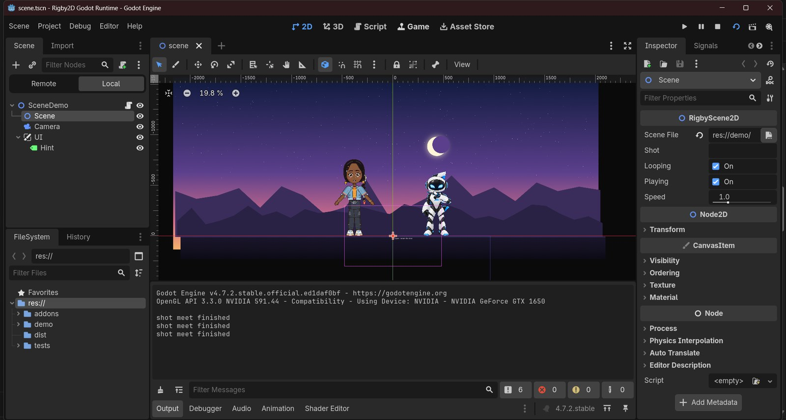
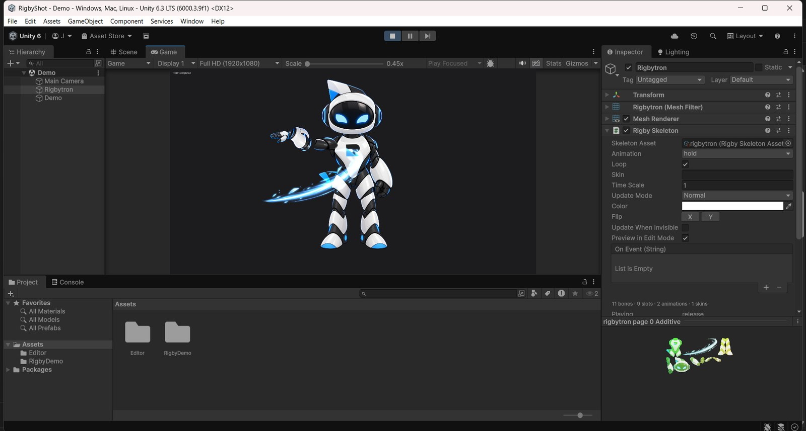
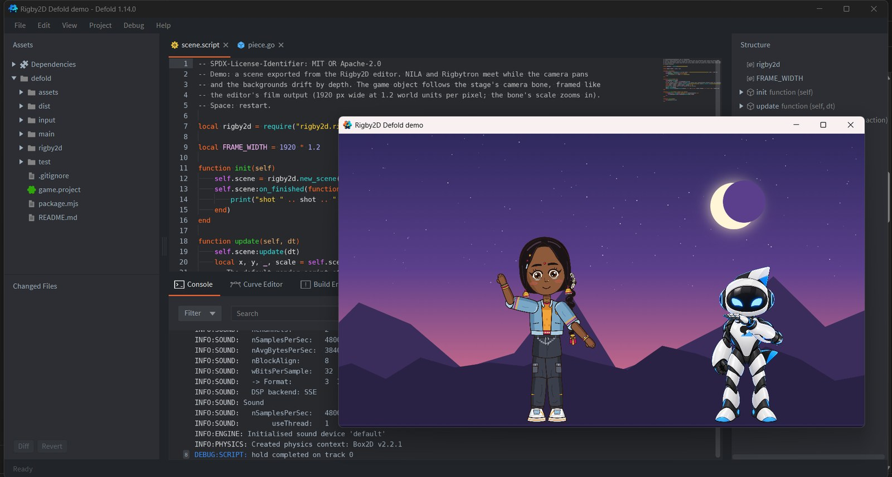
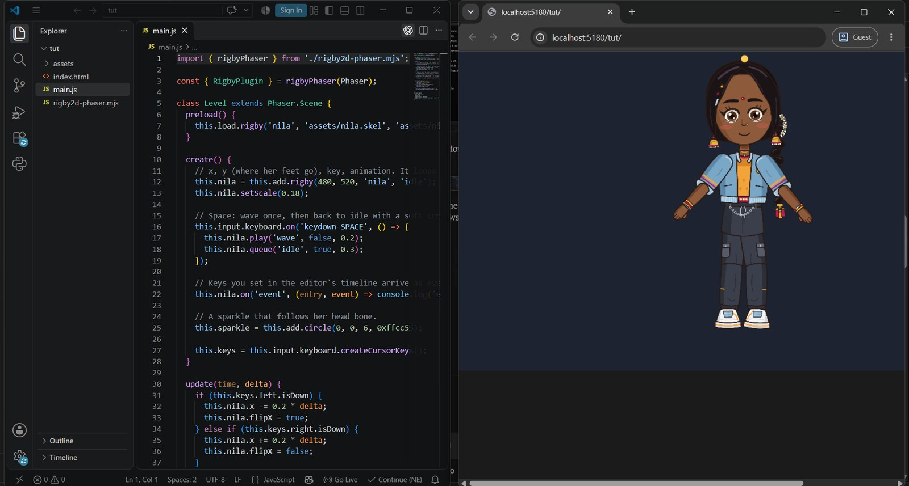

Runtimes
One rig.
Every engine. Every frame.
Export once and play the same animation in Godot, Unity, Defold, Cocos Creator, Phaser, PixiJS, the browser or Rust. Eight official runtimes, free for any game, tested against each other frame by frame on every commit.
Live, in your browser
How many NILAs can your device run?
Each NILA has 39 bones, 890 mesh vertices and physics on her braid. This is the JavaScript runtime and its WebGL renderer, the same code a web game ships, and the slowest of the eight. The native runtimes are 3 to 4 times faster.
- Characters
- 10
- Animation, per frame
- –
- Per character
- –
- Drawing
- –
This browser can't run WebGL, so the crowd can't play here.
Official runtimes
Every one is maintained here, ships with each release and passes the same tests. No community ports to hope for.
In the editor, File ▸ Get runtimes downloads the ones that match your version, or installs them straight into a Godot or Cocos project.
In their engines
Not mock-ups: each runtime in its own editor, playing the demo characters.




Why Rigby2D runtimes
Already using Spine? Your exports play in Rigby2D runtimes as they are. Here is what changes.
| Rigby2D runtimes | Spine runtimes | |
|---|---|---|
| Cost | Free. MIT or Apache-2.0, for any game, any studio, any revenue. | Need a Spine editor license. |
| Defold, Cocos Creator, Rust | Official, released and tested with the editor. | Listed as third-party runtimes, maintained by the community. |
| Scenes | Whole scenes play in the engine: several characters on a stage, clips with crossfades, a camera with parallax. | One skeleton at a time; the scene is built in each engine. |
| File versions | One runtime reads them all: skeleton JSON 3.8, 4.2 and 4.3 and binary .skel 4.3. | Each runtime version reads exports of its own editor version. |
| Getting them | From the editor: File ▸ Get runtimes, matched to your version. | From the runtimes repository, by hand. |
Spine is a trademark of Esoteric Software. Rigby2D isn't affiliated with it; this compares the published runtime licenses and lists as of November 2026. See also Rigby2D vs Spine.
Correct
Frame for frame, to eight decimal places
The JavaScript runtime is the reference. Golden files record what it does with every demo rig: bone matrices, vertices, colors, draw order and events, for every animation, crossfades, layered tracks, queues and skins. The Rust, C++ and C# runtimes replay them on every commit and must match.
See the CI workflow| Rig | Bone matrices | Vertices |
|---|---|---|
| Rigbytron | 2 × 10−16 | 1 × 10−15 |
| NILA, with physics | 3 × 10−11 | 3 × 10−9 |
| Scene: NILA and Rigbytron on a stage | 2 × 10−12 | 5 × 10−11 |
| 16 sample rigs, 3,500 frames | under 10−10 relative | |
Fast
Native speed where it counts
Posing a character means animation, IK, transform, path and physics constraints, world transforms and every mesh vertex. The native cores do it in microseconds and allocate nothing in steady playback.
- Unity: 200 NILAs in 5.0 ms a frame on a 4-core laptop, upload included.
- Defold: NILA posed in 12 µs, her geometry built in 24 µs, written straight into vertex buffers.
- Rust: 3 to 4 times faster than JavaScript on every rig.
| Rig | JavaScript | Rust |
|---|---|---|
| 67 bones, 276 mesh vertices | 50 µs | 14.5 µs |
| 76 bones, 667 weighted vertices, 9 IK | 71 µs | 22 µs |
| 143 bones, 879 vertices, 21 constraints | 90 µs | 22 µs |
Everything the editor does, in your game
Formats: skeleton JSON 3.8, 4.2, 4.3 · binary .skel 4.3 · texture atlas · .scene.json.
Ship it anywhere. Pay nothing.
The editor and every runtime are free and open source, for commercial games too.